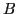
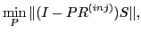

The top plate of a guitar is crucial for sound amplification. The
frequencies in the spectrum of the vibrating string which are close to
resonance frequencies of the top plate are amplified the most, and
determine (among other factors) the sound of the guitar. We employ a
finite element discretisation of the Lamé equation for the numerical
simulation of this problem.
To compute the resonance frequencies, we use a projection method for generalized symmetric eigenvalue problems . The key step is a minimization of the Rayleigh-Quotient over a suitable constructed subspace via the Rayleigh-Ritz-method. To construct , we use the Preconditioned Inverse Iteration (PINVIT): The approximate solution of the Inverse Iteration equation leads to the correction
The preconditioner  used in (1) should approximate the
inverse of the stiffness matrix  , and must thus be robust with respect
to anisotropies in the geometry and the material properties. We seek to
treat the arising linear system using algebraic multigrid. In particular,
we focus on the Filtering Algebraic Multigrid approach
[3,4]. The key idea of this AMG variant is to construct
the interpolation operator
, and must thus be robust with respect
to anisotropies in the geometry and the material properties. We seek to
treat the arising linear system using algebraic multigrid. In particular,
we focus on the Filtering Algebraic Multigrid approach
[3,4]. The key idea of this AMG variant is to construct
the interpolation operator  , such that the norm of the two-grid
operator is minimized in a certain sense. At the same time, constraints
are imposed to guarantee filter conditions for certain test vectors
, such that the norm of the two-grid
operator is minimized in a certain sense. At the same time, constraints
are imposed to guarantee filter conditions for certain test vectors  :
:
|  s.t. |